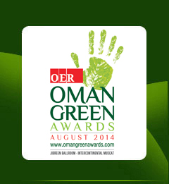
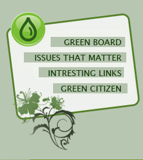
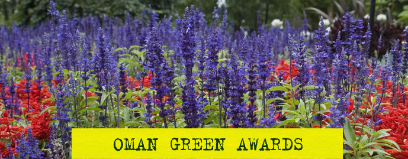

| |
|
 |
|
|
 |
|
|
 |
| |
The threat to our environment is real and has never been
more evident. |
| |
 |
|
|
|
CONTACT US |
SUBSCRIBE OER NEWSLETTER |
HOME |
|
 |
|
|
|
|
| |
| |
|
Newsletter |
|
|
|
Water is key to development |
|
Because water is central to development,
investing in water delivers immediate benefits
as well as long-term social, economic and
environmental resilience.
Whether it is food security, nutrition security,
poverty reduction, economic growth, energy
production, human health—water is the nexus.
Water is a key factor in the achievement of each
of the Millennium Development Goals. Without
water security, there will be no food security,
energy security will be compromised and poverty
reduction and economic growth will not be
sustainable.
Everyone knows that water is essential to the
life of the planet and to the prosperity of its
people. But what fewer people know—and what
political leaders are failing to address—is that
the increasing pressures of climate change,
population growth, urbanisation, and evolving
energy needs, are together putting unprecedented
pressure on our finite freshwater resources.
We've got to do something about it now.
A world of cities
Feeding the world has been a top priority for
decades. The task is not getting easier. It
isn’t just that there are more people to feed,
it is where they live. The world’s urban
population is expected to increase from around
3.3 billion today to over 6 billion by 2050.
Partly as a result of economic development,
we’ve become an urban world so rapidly that
cities, especially in the developing world, have
not kept up with ensuring clean water supplies,
sanitation and wastewater treatment for their
burgeoning populations.
Depleted resources
South Asia and the Near East/North Africa have
exhausted much of their rain-fed land potentials
and depleted a significant share of their
renewable waters. More than 1.2 billion people
live in river basins where absolute water
scarcity and increasing shortages are serious
concerns. Expanding land under cultivation is
possible in sub-Saharan Africa and Latin America
but requires adequate farming practices,
increased investments and sustainable management
of land and water resources.
Social change
Building that resilience means financing water
infrastructure. But it also means reforming
institutions, building their capacity and
knowledge, and promoting good governance. This
is about financing water resources management, a
long-neglected area. Strong links need to be
built between water and finance experts to
tackle chronic underinvestment and the waste of
scarce funds. |
|
Source: Global Water Partnership |
|
| |
|
Towards a green economy |
|
The
countdown has begun for the second edition of
Oman Green Award, Oman’s first environmental
award, which will be announced on June 5.
Environmental issues and economic development
increasingly intersect and complement each
other. Creating a green economy is going to top
the agenda of most corporates as every company
worth its salt strives to contribute its mite to
protect and restore what is left of the earth
and our environment. As the world population
increases, the demand for food, energy, and
luxuries has increased manifold. The first
casualty of catering to the burgeoning demands
of the increasing urban populace is the
environment. Therefore, it is not only corporate
but also individuals and organisations who need
to contribute towards restoring the dwindling
natural resource that we call the Earth.
Only an enhanced awareness campaign will stir
interest and wake up the people from general
inaction and minimal activism to positive
environmental goals. The Oman Green Awards is a
significant step to create and increase
environmental awareness, as these will also lead
towards greater action in the long term, both at
a community and decision making levels.
For behavioural change
As the country’s first Environmental Awards,
Oman Green Awards has been created to awaken the
eco-consciousness in every citizen and resident.
It is aimed at honouring outstanding
environmental vision, endeavours and
achievements of corporate and individuals who
matter most as they strive in this environmental
cause. The ultimate aim of the awards is to
motivate behavioural change and increase
awareness in relation to the protection and
preservation of our environment. OGA provides
green groups a platform to create awareness,
bring about concerted action through exchange of
ideas, and propel others to come forth and
participate in this social cause. The second
edition of OGA will be held on June 5, 2011.
As a young nation with an aspiration to develop
on all fronts, Oman has made giant strides, but
in this march towards prosperity, the concept of
eco-consciousness was in its infancy. But now, a
growing class of educated Omanis have realised
that to preserve the country and its environment
for the future generations, the conservation of
oil supplies, preservation of the natural
wildlife heritage, and water resources is indeed
a given must. Combined with this is the fact
that air, water, and land pollution are also
significant environmental issues, which need to
be tackled before things go out of hand.
The Oman Green Awards will be an ideal platform
to honour, appreciate and promote voluntary
efforts and achievements. It is an acknowledged
fact that the local green activities and
earth-friendly efforts and achievements have not
been recognised. Globally and regionally,
however, environmental awards in governmental,
corporate and other sectors have been evolving
for several years.
Several organisations including corporate
houses, institutions, schools etc are involved
in relentless efforts to protect and preserve
the environment. But the lack of an umbrella
organisation that will bring these players
together and facilitate better coordination and
exchange of ideas creates an inherent lacuna in
the system. The Oman Green Awards, as the first
of its kind in the Sultanate, quite naturally is
expected to facilitate steps to create a forum
for coordinated eco-efforts in the country. |
|
| |
|
Reduce – An important element |
|
Most
of us are aware of the credo --
reduce-reuse-recycle. The critical first step of
waste prevention is reduce and while this is
overshadowed by a focus on recycling, it is
important to understand the importance of reduce
●
Simplify: Simplify your life as much as
possible. Only keep belongings that you
use/enjoy on a regular basis. By making the
effort to reduce what you own, you will
naturally purchase less/create less waste in the
future.
●
Reduce Purchases: In general, think before you
buy any product - do you really need it? How did
the production of this product impact the
environment and what further impacts will there
be with the disposal of the product (and
associated packaging materials)? When you are
thinking about buying something, try the 30-Day
Rule -- wait 30 days after the first time you
decide you want a product to really make your
decision. This will eliminate impulse buying.
●
The
Compact: Join or form a Compact in your area -
groups all across the globe committing for 12
months to not buy any new products (see lower
right sidebar for groups).
●
Replace Disposables: Wherever possible, replace
disposable products with reusable ones (i.e.,
razor, food storage, batteries, ink cartridges
(buy refill ink), coffee filters, furnace or air
conditioner filters, etc.).
●
Buy
Used: Buy used products whenever possible. Some
sources:
-
Local thrift stores
-
EBay
-
Craigslist
-
Amazon (search on specific refurbished
product)
-
Freecycle (free!)
-
Local newspaper listings
-
Local material exchange sites (search in
your area)
-
Garage sales (search in your area in the
'for sale' > 'garage sales' section
-
Used refurbished computers (check your
computer manufacturer's website or Amazon)
-
Local used furniture stores (search in your
area)
-
Local consignment shops (search in your
area)
-
Borrow From Friends: If you only need
something temporarily, ask if a friend or
neighbour would loan it to you.
-
Share With Friends: Share things like books,
magazines, movies, games, and newspapers
between friends and neighbours.
-
Tree-Free Home: As much as possible, create
a tree-free home:
◦replace paper napkins with cloth napkins
◦replace paper towels with a special set of
cloth towels/napkins (or cut up old t-shirts
for great towels) - store the used ones in a
small container in your kitchen and just
wash and reuse
◦purchase bleach-free, toilet paper that is
made from the highest post-consumer waste
content you can find (80% minimum)
◦if you print documents, print on once-used
paper and/or bleach-free, recycled paper
with the highest post-consumer waste content
available (or hemp/alternative-source paper,
if you can afford it)
◦reuse envelopes, wrapping paper, the front
of gift cards (as postcards) and other paper
materials you receive wherever possible
◦read books, magazines, and newspapers from
your local library
◦create and use note pads from once-used
paper
◦leave messages for family members/roommates
on a reusable message board
◦make your own cards/letters from once-used
products or handmade paper
◦if you will be doing construction on your
house, search out alternatives to using
newly cut wood (no endorsement of any
company intended):
■Eco-Friendly Flooring Guide
■straw bale
■bamboo -- two sites to check out: Plyboo
and Teragren
■true (natural) linoleum
■previously used wood -- one site to check
out: Vintage Timber Works
■cob -- three sites to check out: Cob, Cob
Cottage, and EcoBusiness-Cob Building
Resources
■composite decking -- The Latest Trend in
Decking
●
Bulk
Purchases: Avoid products that are packaged for
single use (i.e., drinks, school lunches, candy,
cat and dog food, salad mixings, etc.). Instead,
buy in bulk and transfer the products to your
own reusable containers. Many health food stores
have bulk bins where they sell everything from
grains to cereal to cleaning products. For
additional ideas, read the precycling
information page.
●
Buy
Only What You Need: Buy only as much as you know
you'll use for items such as food, cleaning
supplies, and paint.
●
Avoid Creating Trash: Avoid creating trash
wherever possible: when ordering food, avoid
receiving any unnecessary plastic utensils,
straws, etc. (ask in advance), buy ice cream in
a cone instead of a cup, don't accept "free"
promotional products, buy products with the
least amount of packaging, etc. Every little bit
of trash avoided does make a difference!
●
Shopping Bags: While shopping, if you only buy a
few products skip the shopping bag. For larger
purchases, bring your own. Learn about the
dangers of plastic bags and what countries
around world are doing about it ("The Dangers of
Plastic Bags" slide show from Teacher Vishal
Mody).
●
Junk
Mail: For ideas on how to reduce junk mail,
check out:
◦Reduce Personal and Business Junk Mail
◦Do-it-yourself: Stop junk mail, email and phone
calls
◦How to Get Rid of Junk Mail, Spam, and
Telemarketers
◦Opt-Out
●
Waste-Free Lunches: Pack a Waste-Free Lunch
whenever possible.
●
Mug-to-Go: Carry a mug with you wherever you go
for take out beverages.
●
Address Early Consumption Habits: New American
Dream offers tips for protecting your children
from intrusive and harmful advertising that
promotes mindless consumption.
●
Encourage Hotels to Reduce Waste: When staying
at a hotel, motel, or bed and breakfast let the
management know that you like to support
businesses that adopt environmentally
responsible practices (including reducing
waste). Print out and drop off the Sustainable
Solutions for Green Hotels environmental tips
list. To locate environmentally friendly hotels,
search on the Internet under "ecotourism" and/or
visit Green Hotels Association. |
| |
|
|
|
|
| |
|
Back |
| |
|
 |
|
|